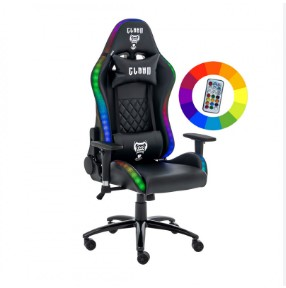

2006 - Primeira Cadeira: DXRacer lançou a 1º cadeira gamer, adaptando assentos de carros esportivos para
o uso em jogos
2011 - Popularização com eSports e Twitch: O mercado de cadeiras gamers cresce rapidamente com a
popularização dos eSports e da plataforma de streaming Twitch2. As cadeiras se tornam um simbolo de
status entre os streamers
2015 - Expansão do Mercado: Novas marcas entram no mercado, como Secretlab e Noblechairs, oferecendo
mais opções de design e conforto.
2018 - Inovações Técnológicas: Introdução de técnologias como espumas de memória e sistemas de massagem
integrado, aumentando o conforto e ergonomia
2020 - Personalização e Estilo: A personalização se torna uma tendência, com opções de cores, estampas e
logotipos personalizados, especialmente populares entre streamers e criadores de conteúdo

2024 - Continuação da Evolução: As cadeiras gamers continuam a evoluir com avanços nos designs e
materiais, oferecendo ainda mais conforto e funcionalidades para todos.
Formulário para personalização da sua própria cadeira: